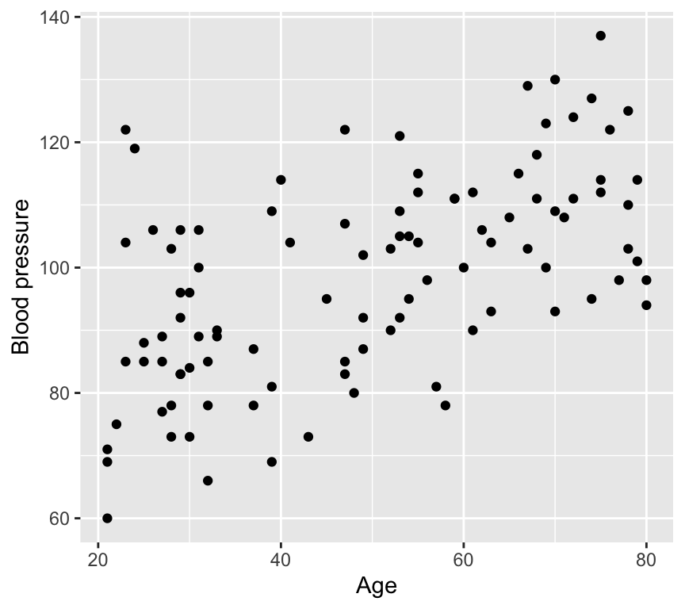
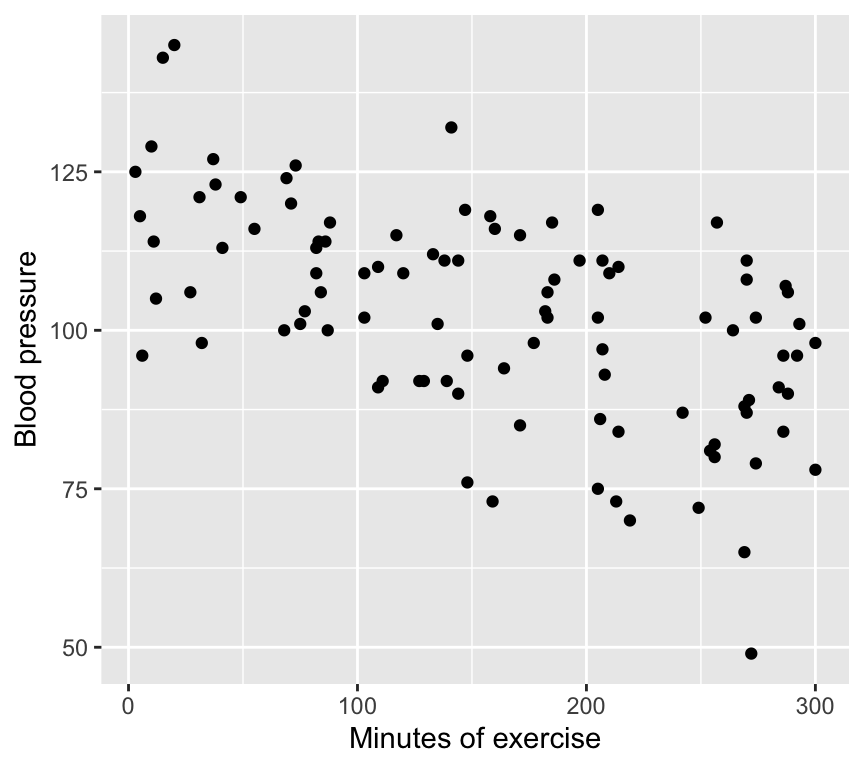
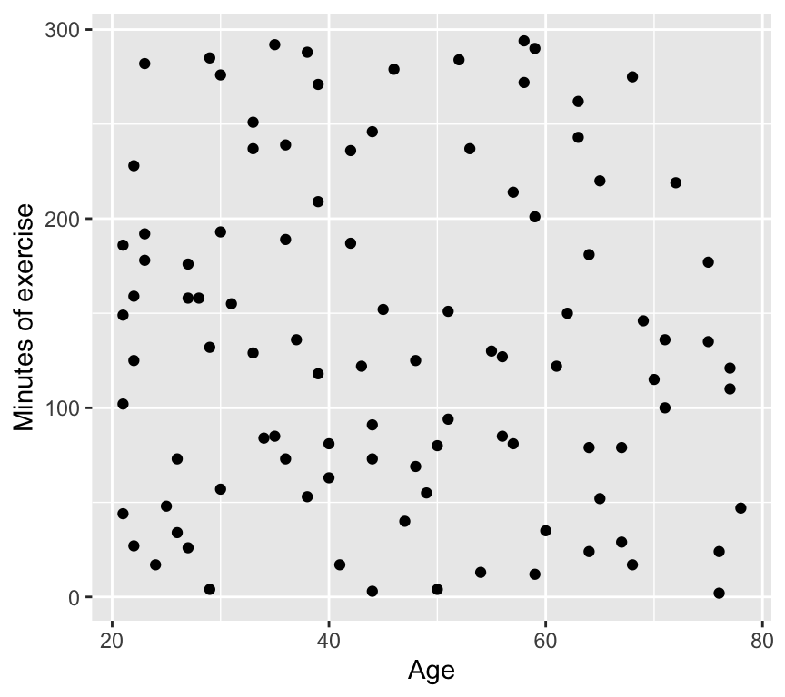
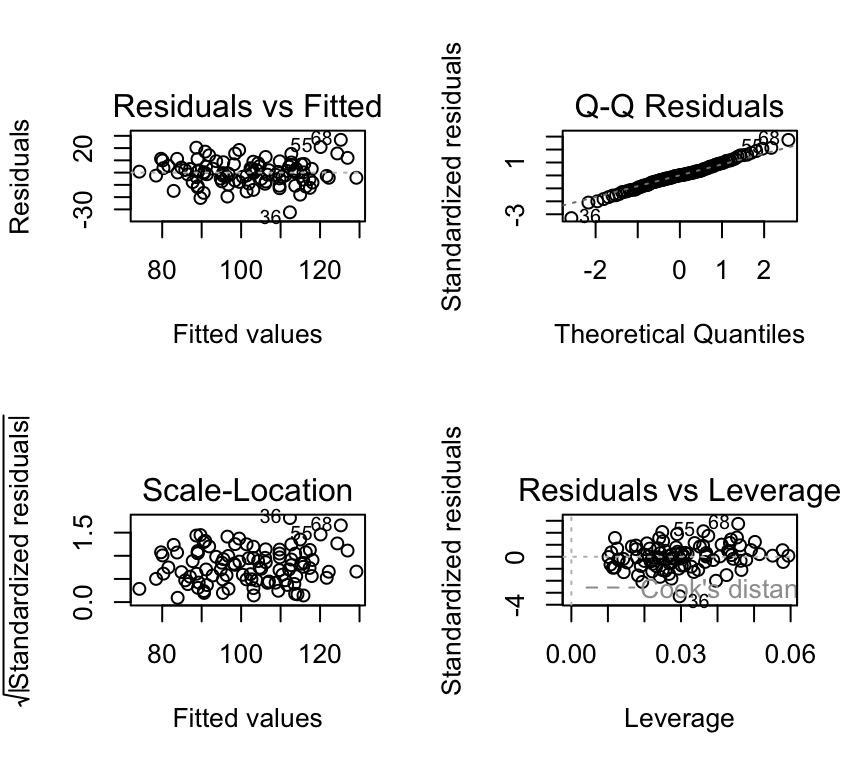
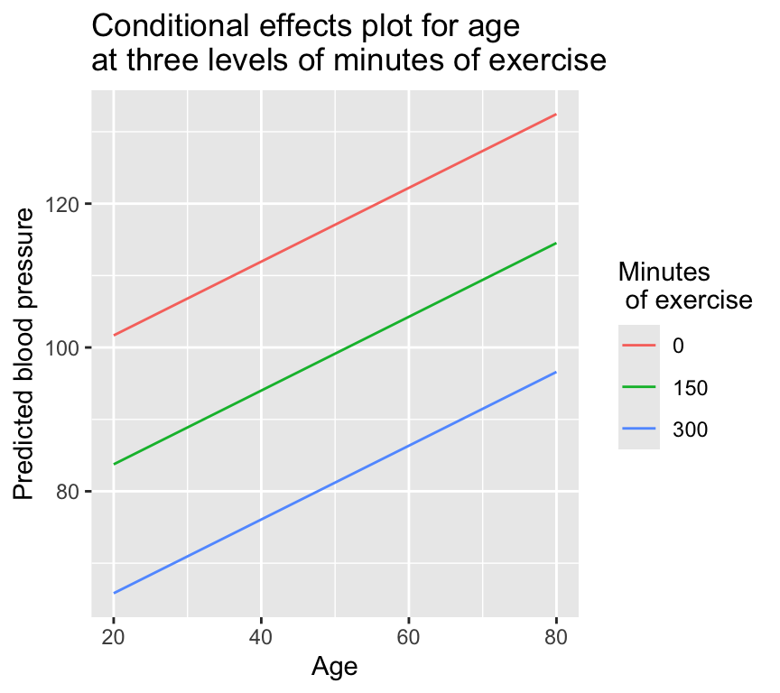
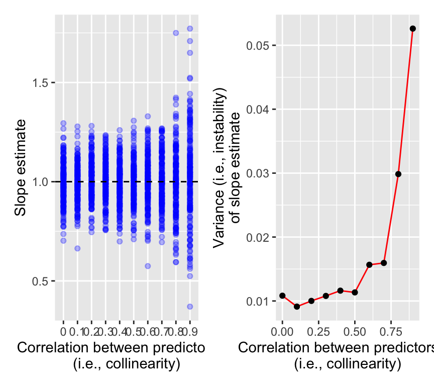

In the previous chapters we covered simple linear regression and one-way analysis of variance. In both we had one response variable and one explanatory variable. In both cases we made a linear model to relate the response variable to the explanatory variable. The two cases differed in the type of explanatory variable. In the case of simple linear regression, the explanatory variable was continuous. In the case of one-way ANOVA, the explanatory variable was categorical.
We will now extend the linear model and analyses to cases with more than one (i.e., multiple) explanatory variables. The explanatory variables can be continuous or categorical, and can be a mixture of the two.
Some combinations of explanatory variables have special names:
Multiple (more than one) continuous explanatory variables -> Multiple linear regression.
Two categorical explanatory variables -> Two-way ANOVA.
One continuous and one categorical explanatory variable -> Analysis of covariance (ANCOVA).
We will look at each of these, and start with multiple linear regression which is usually shortened to just multiple regression.
Multiple regression
We previously looked at whether blood pressure is associated with age. This is an important question, because blood pressure has many health implications. However, blood pressure is not only associated with age, but also with other factors, such as weight, height, and lifestyle. In this chapter, we will look at how to investigate the association between blood pressure and multiple explanatory variables.
When we have multiple explanatory variables, we are often interested in questions such as:
Question 1: As an ensemble (i.e., all together), are the explanatory variables “useful”?
Question 2: Are each of the explanatory variables associated with the response?
Question 3: What proportion of variability is explained?
Question 4: Are some explanatory variables more important than others?
An example dataset
Blood pressure is again the response variable, with age and lifestyle as two explanatory variables. Lifestyle is a continuous variable that is the number of minutes of exercise per week.
Rows: 100 Columns: 3
── Column specification ────────────────────────────────────────────────────────
Delimiter: ","
dbl (3): age, mins_exercise, bp
ℹ Use `spec()` to retrieve the full column specification for this data.
ℹ Specify the column types or set `show_col_types = FALSE` to quiet this message.
Since there are three variables, we can make three different scatter plots to visualise the relationships:
1. Age vs blood pressure. This is the graph of the response variable (blood pressure) against one of the explanatory variables (age). It looks like there is evidence of a positive relationship.

Here we see a positive relationship between age and blood pressure. Blood pressure tends to increase with age.
2. Minutes of exercise vs blood pressure. This is a graph of the response variable (blood pressure) against the other explanatory variable (minutes of exercise). It looks like there is evidence of a negative relationship.

Here we see a negative relationship between minutes of exercise and blood pressure. Blood pressure tends to decrease with more minutes of exercise.
3. Age vs minutes of exercise. This is a graph of the two explanatory variables against each other. It looks like there is no relationship.

And here we see no relationship between age and minutes of exercise. The two explanatory variables appear to be independent.
Important
The lack of correlation between the two explanatory variables is very important. If the two explanatory variables were correlated, we would have a situation known as multicollinearity. Multicollinearity can greatly complicate the interpretation of the results of a multiple regression analysis. We will discuss multicollinearity later.
The multiple linear regression model
The multiple linear regression model is an extension of the simple linear regression model. Recall the simple linear regression model is:
\[y_i = \beta_0 + \beta_1 x_i + \epsilon_i\]
where:
\(y_i\) is the response variable
\(x_i\) is the explanatory variable
\(\beta_0\) is the intercept
\(\beta_1\) is the slope
\(\epsilon_i\) is the error term.
The multiple linear regression model with two explanatory variables is:
\(x_i^{(1)}\) and \(x_i^{(2)}\) are the two explanatory variables
\(\beta_0\) is the intercept
\(\beta_1\) is the slope for the first explanatory variable
\(\beta_2\) is the slope for the second explanatory variable
Note that the intercept \(\beta_0\) is the value of the response variable when all explanatory variables are zero. In this example, it would be the blood pressure for someone that is 0 years old and does 0 minutes of exercise per week. This is not a particularly useful scenario, but it is a necessary mathematical construct that helps us to build the model.
We can extend the multiple regression model to have an arbitrary number of explanatory variables:
Just like in simple linear regression, we can estimate the parameters \(\beta_0, \beta_1, \ldots, \beta_p\) using the method of least squares. The least squares method minimizes the sum of the squared residuals:
\(\hat{\beta}_0, \hat{\beta}_1, \ldots, \hat{\beta}_p\) are the estimated parameters.
Think-Pair-Share (#tps-two-shape) Graphically, a linear regression with one explanatory variable is a line. What is a geometric representation of linear regression with two explanatory variables?
Here is a graph of the geometric representation of a multiple linear regression model with two explanatory variables (please note that this plot is best viewed in the HTML version of the book; in the PDF version, it will appear as a static image):
Let’s write the equation for the blood pressure data:
\(bp_i\) is the blood pressure for the \(i\)th observation
\(age_i\) is the age for the \(i\)th observation
\(mins\_exercise_i\) is the minutes of exercise for the \(i\)th observation
\(\beta_0\) is the intercept
\(\beta_1\) is the slope for age
\(\beta_2\) is the slope for minutes of exercise
\(\epsilon_i\) is the error term
and the error term is assumed to be normally distributed with mean 0 and constant variance, just as was the case for simple linear regression:
\[\epsilon_i \sim N(0, \sigma^2)\]
Seventh, we know how to make predictions using the model, and to make a prediction band.
What we don’t know is how to answer the four questions already mentioned above:
Question 1: As an ensemble (i.e., all together), are the explanatory variables “useful”?
Question 2: Are each of the explanatory variables associated with the response?
Question 3: What proportion of variability is explained?
Question 4: Are some explanatory variables more important than others?
Let’s answer these questions using the blood pressure example.
Fitting the model
We know how to estimate the parameters \(\beta_0, \beta_1, \ldots, \beta_p\) using the method of least squares.
In R, we can fit a multiple linear regression model using the lm() function in a very similar way to the simple linear regression model. Here is the code for the blood pressure example. To fit two explanatory variables, we simply add the second variable to the formula using the + sign:
m1 <-lm(bp ~ age + mins_exercise, data = bp_data_multreg)
Checking the assumptions
Great news –> the five assumptions of the multiple linear regression model are the same as for the simple linear regression model:
Normality of residuals.
Homoscedasticity = constant variance of residuals.
Independence of residuals.
Linearity.
No outliers.
Think-Pair-Share (#tps-assump-match) Review how we can check these assumptions in the simple linear regression model. Match the following to the assumptions above:
Graph of size of residuals vs. fitted values.
QQ-plot.
Graph of residuals vs. fitted values.
Graph of leverage vs. standardized residuals.
And what is missing?
We can check the assumptions of the multiple linear regression model using the same methods as for the simple linear regression model. Here is the code for the blood pressure example:
# Check the assumptionspar(mfrow=c(2,2))plot(m1, which =c(1,2,3,5), add.smooth =FALSE)

We see that the assumptions are met for the blood pressure example:
Normality of residuals: The QQ-plot shows that the residuals are normally distributed.
Homoscedasticity: The scale-location plot shows that the residuals have constant variance.
Independence of residuals: No evidence of pattern or clustering. But also need to know about study design to properly assess independence.
Linearity: The residuals vs. fitted values plot shows no clear pattern in the residuals.
No outliers: No points with high leverage or high residuals.
Question 1: As an ensemble, are the explanatory variables useful?
Recall that when we learned about ANOVA we saw that a single categorical explanatory variable with multiple levels can be represented as multiple binary (0/1) explanatory variables. In that case, we used the \(F\)-test to test the null hypothesis of no effect / relationship for all binary variables together.
Likewise, when we have multiple continuous explanatory variables, we use the \(F\)-test to test the null hypothesis that together the explanatory variables have no association with the response variable. That is, we use the \(F\)-test to test the null hypothesis that the ensemble of explanatory variables is not associated with the response variable.
This corresponds to the same null hypothesis as we used in one-way ANOVA: The null hypothesis that the explained variance of the model is no greater than would be expected by chance. Here, “by chance” means that the slopes of the explanatory variables are zero:
\[H_0: \beta_1 = \beta_2 = \ldots = \beta_p = 0\]
And the alternative hypothesis (just as in one-way ANOVA) is that the explained variance of the model is greater than would be expected by chance. This would occur if the slopes of some or all of the explanatory variables are not zero:
\[H_1: \beta_1 \neq 0 \text{ or } \beta_2 \neq 0 \text{ or } \ldots \text{ or } \beta_p \neq 0\]
Recall that the \(F\)-test compares the variance explained by the model to the variance not explained by the model (i.e., the variance of the residuals). If the variance explained by the model is significantly greater than the variance not explained by the model, then we can conclude that the explanatory variables are associated with the response variable.
If we reject the null hypothesis, we can conclude that some combination of the explanatory variables is associated with the response variable. However, we cannot conclude which specific explanatory variables are associated with the response variable. To determine which specific explanatory variables are associated with the response variable, we need to perform individual \(t\)-tests for each explanatory variable. We will do this in the next section.
OK, back to the \(F\)-test.
We know a lot already from the ANOVA chapter. Let’s review how we calculate the \(F\)-statistic.
The \(F\)-statistic is calculated as the ratio of two mean squares:
The mean square of the model (\(MSE_{model}\)).
The mean square of the residuals (\(MSE_{residual}\)).
Recall that a mean square is a sum of squares divided by the associated degrees of freedom. The formulas for these are the same as for ANOVA.
So, to calculate these two mean squares, we need to calculate three sums of squares:
The total sum of squares (\(SST\)).
The sum of squares of the model (\(SSM\)).
The sum of squares of the residuals (\(SSE\)).
We also need to calculate the degrees of freedom associated with each sum of squares.
The total degrees of freedom is \(n-1\), where \(n\) is the number of observations.
The model degrees of freedom is \(p\), where \(p\) is the number of explanatory variables. This is because for each explanatory variable we estimate one parameter (the slope), and each estimated parameter uses up one degree of freedom.
The residual degrees of freedom is \(n-1-p\).
The F-statistic in R
We could do all these calculations ourselves (and you might be asked to in the exam), but also we can just ask R! For question 1 we need to know the \(F\)-statistic for the multiple linear regression model. We can easily get this from R using the summary() function, and by looking in the right place in the output:
summary(m1)
Call:
lm(formula = bp ~ age + mins_exercise, data = bp_data_multreg)
Residuals:
Min 1Q Median 3Q Max
-21.6681 -5.9165 0.3098 5.7818 23.5240
Coefficients:
Estimate Std. Error t value Pr(>|t|)
(Intercept) 90.81311 3.98484 22.790 < 2e-16 ***
age 0.53893 0.06102 8.832 4.45e-14 ***
mins_exercise -0.10387 0.01107 -9.380 2.93e-15 ***
---
Signif. codes: 0 '***' 0.001 '**' 0.01 '*' 0.05 '.' 0.1 ' ' 1
Residual standard error: 9.376 on 97 degrees of freedom
Multiple R-squared: 0.72, Adjusted R-squared: 0.7142
F-statistic: 124.7 on 2 and 97 DF, p-value: < 2.2e-16
In the final line of output we see “F-statistic: 124.7 on 2 and 97 DF, p-value: 1.55^{-27}”.
The model degrees of freedom is 2 (because we have two explanatory variables), and the residual degrees of freedom is 97 (because we have 100 observations and 2 explanatory variables, so \(100 - 1 - 2 = 97\)).
So the summary() function gives us everything we need to answer question 1. It even gives us the \(p\)-value for the \(F\)-test.
How to report the result. We could write somthing like this: “The combination of age and minutes of exercise is significantly associated with blood pressure (F(2, 97) = 124.7, p = 1.55^{-27}).” Note that this is rather an undesirable statement, because it focuses too much on the statistics and not enough on the science. Indeed, perhaps we care more about the association of each explanatory variable with blood pressure, which we will look at next.
Note
If you want to review how to calculate a p-value from an F-statistic, see the corresponding section of the one-way ANOVA chapter.
Question 2: Which variables are associated with the response?
As we did for simple linear regression, we can perform a \(t\)-test for one explanatory variable to determine if it is associated with the response. And we can do this for each of the explanatory variables. As before, the null hypothesis for each \(t\)-test is that the slope of the explanatory variable is zero. The alternative hypothesis is that the slope of the explanatory variable is not zero.
Here is the coefficients table, which includes the results of the \(t\)-tests for each explanatory variable:
summary(m1)$coef
Estimate Std. Error t value Pr(>|t|)
(Intercept) 90.8131109 3.98484209 22.789639 9.885524e-41
age 0.5389268 0.06102163 8.831733 4.454019e-14
mins_exercise -0.1038729 0.01107426 -9.379670 2.932092e-15
And we can get the 95% CI for each slope estimate \(\hat\beta_j\) as follows:
Reminder: The 95% confidence interval is \([\hat\beta - c \cdot \sigma^{(\beta)} ; \hat\beta + c \cdot \sigma^{(\beta)}]\), where \(c\) is the 97.5% quantile of the \(t\)-distribution with \(n-p\) degrees of freedom).
Important
However Please insert a note into your brain that we are dealing here with an ideal case of uncorrelated explanatory variables. You’ll learn later in the course about what happens when explanatory variables are correlated. Hint: interpretation is difficult and unstable!
Think–Pair–Share (#a_partial_effects) What does “holding other variables constant” mean here? Is this always biologically plausible?
Question 3: What proportion of variability is explained?
Multiple \(R^2\)
We can calculate the \(R^2\) value for the multiple linear regression model just like we already did for a simple linear regression model. The \(R^2\) value is the proportion of variability in the response variable that is explained by the model. As before, the \(R^2\) value ranges from 0 to 1, where 0 indicates that the model does not explain any variability in the response variable, and 1 indicates that the model explains all the variability in the response variable.
For multiple linear regression, we often use the term “multiple \(R^2\)” to distinguish it from the \(R^2\) value for simple linear regression. The multiple \(R^2\) is the proportion of variability in the response variable that is explained by the model, taking into account all the explanatory variables in the model.
As before, for simple linear regression, the multiple \(R^2\) value is calculated as the sum of squares explained by the model divided by the total sum of squares:
where \(SSM\) is the sum of squares explained by the model and \(SST\) is the total sum of squares, and \(SSM = SST - SSE\).
For the blood pressure data:
summary(m1)$r.squared
[1] 0.7199706
\(R^2\) for multiple linear regression can also be calculated as the squared correlation between \((y_1,\ldots,y_n)\) and \((\hat{y}_1,\ldots,\hat{y}_n)\), where the \(\hat y\) are the fitted values from the model. The fitted values are calculated as:
However, we have a little problem to address. The \(R^2\) value increases as we add more explanatory variables to the model, even if the additional variables are not associated with the response. This is because the \(R^2\) value is calculated as the proportion of variability in the response variable that is explained by the model. As we add more explanatory variables to the model, the model will always explain more variability in the response variable, even if the additional variables are not associated with the response. Some of the variance will be explained by chance.
Here is an example of this problem. First, here’s the explanatory power of the model with only age and minutes of exercise as the explanatory variables:
m1 <-lm(bp ~ age + mins_exercise, data = bp_data_multreg)summary(m1)$r.squared
[1] 0.7199706
Now, we can add a new explanatory variable to the blood pressure model that is not associated with the response:
bp_data_multreg$random_variable <-rnorm(nrow(bp_data_multreg))m2 <-lm(bp ~ age + mins_exercise + random_variable, data = bp_data_multreg)summary(m2)$r.squared
[1] 0.7272101
The \(R^2\) value for the model with the random variable is higher than the \(R^2\) value for the model without the random variable. This is because the model with the random variable explains more variability in the response variable, even though the random variable is not associated with the response.
To address this problem, we can use the adjusted \(R^2\) value. The adjusted \(R^2\) value is calculated as:
where * \(SSE\) is the sum of squared errors * \(SST\) is the total sum of squares * \(n\) is the number of observations * \(p\) is the number of explanatory variables in the model.
Or put another way:
\[R^2_{adj} = 1-(1-R^2 )\frac{n-1}{n-p-1}\] In this form, we can see that as \(p\) increases (as we add explanatory variables) the term \((n-1)/(n-p-1)\) increases, and the adjusted \(R^2\) value will decrease if the additional variables are not associated with the response.
Take home: when we want to compare the explanatory power of models that differ in the number of explanatory variables, we should use the adjusted \(R^2\) value.
Question 4: Are some explanatory variables more important than others?
We know how to test the significance of the parameters using the \(t\)-test. We also know how to calculate the confidence intervals for the parameters, and to make a confidence band.
How important are the explanatory variables and how important are they relative to each other?
Think-Pair-Share (#tps-variable-importance) How might we assess how important is each of the explanatory variables, and how important they are relative to each other?
The importance of an explanatory variable can be assessed by looking at the size of the coefficient for that variable. The larger the coefficient, the more important the variable is in explaining the response variable.
It is, however, important to remember that the size of the coefficient depends on the scale of the explanatory variable. If the explanatory variables are on different scales, then the coefficients will be on different scales and cannot be directly compared.
In our example, the age variable is measured in years, so the coefficient is in units mmHg (pressure) per year. The mins_exercise variable is measured in minutes, so the coefficient is in units mmHg per minute. The coefficients are on different scales and cannot be directly compared. Furthermore, the value of the coefficients would change if we measured age in months or minutes of exercise in hours.
There are other perspectives we can take when we’re assessing importance. For example, we cannot change our age, but we can change the number of minutes of exercise. So, the practical importance of the two variables is quite different in that sense also.
To compare the importance of the explanatory variables that are measured on different scales, we can standardize the variables before fitting the model. This means that we subtract the mean of the variable and divide by the standard deviation. This puts all the variables on the same scale, so the coefficients can be directly compared. The coefficients are then in units of the response variable per standard deviation of the explanatory variable.
However, the coefficients are then not in the original units of the explanatory variables, so it is not always easy to interpret the coefficients. So while we can compare the coefficients, they have lost a bit of their original meaning and are not so easy to interpret.
One way to relate the coefficients in this case is to realise that to compensate for the blood pressure increase associated with one year of age, one would need to exercise for a certain number of minutes more.
Think-Pair-Share (#tps-exercise-age) How many minutes of exercise per week would we need to add to our fitness schedule to compensate for the blood pressure increase associated with one year of age?
Therefore to get a predicted value of \(y_i\), we can use the estimated parameters (\(\hat\beta_0, \hat\beta_1, \ldots, \hat\beta_p\)) and the values of the explanatory variables (\(x_i^{(1)}, x_i^{(2)}, \ldots, x_i^{(p)}\)):
In R, we can use the predict() function to make predictions from a multiple linear regression model. Here is an example of how to make predictions for the values of the explanatory variables in the original dataset:
predictions <-predict(m1)
Where m1 is the multiple linear regression model fitted earlier. The predict function automatically uses the original data because we did not provide any new data.
We can also make predictions for new values of the explanatory variables by providing a new data frame to the predict() function. Here is an example of how to make predictions for new values of age and minutes of exercise:
First we need to make some new values of age and minutes of exercise:
Then we can use the predict() function to make predictions for these new values:
new_predictions <-predict(m1, newdata = new_data)
Important
The new data frame must have the all the explanatory variables used in the model, and the variable names must match exactly those used in the model.
We can take this to the next level and make what is called a “conditional effects plot” or “effect plot”. This is a plot that shows the predicted values of the response variable for different values of one explanatory variable, while holding the other explanatory variables constant. Here is an example of how to make a conditional effects plot for age, while holding minutes of exercise constant at 100:
And lets take this to the next level again and make a conditional effects plot for three different levels of mins_exercise:
new_data_effects_3 <-expand.grid(age =seq(20, 80, by =1),mins_exercise =c(0, 150, 300))
A new function! And it’s one of Owen’s favourites: expand.grid(). This function creates a data frame from all combinations of the supplied vectors or factors. Here, we are creating a data frame with all combinations of age (from 20 to 80) and minutes of exercise (0, 150, and 300).
We then give the new data frame to the predict() function to get the predicted values for each combination of age and minutes of exercise:
ggplot(data = new_data_effects_3, aes(x = age, y = prediction,col = mins_exercise_fac)) +geom_line() +labs(x ="Age", y ="Predicted blood pressure", color ="Minutes of exercise") +ggtitle("Conditional effects plot for age\nat three levels of minutes of exercise")

Collinearity
In the blood pressure example data used previously in this chapter there is no evidence of correlation between the two explanatory variables. However, in practice, it is common for explanatory variables to be correlated with each other. This is known as collinearity. It can be quite problematic for us!
Think-Pair-Share (#tps-collinearity1) Imagine if there was perfect correlation between age and minutes of exercise. This would mean that a graph of age vs minutes of exercise would show a perfect line. What would be the implications for the multiple linear regression model? For example, what would be the \(R^2\) value for a model with one explanatory variable compared to a model with both explanatory variables?
Collinearity, specifically harmful collinearity, is extremely common in real dataset that result from observational studies. This is because in observational studies there are often numerous explanatory variables, and they are often correlated with each other. This is a situation that is ripe for collinearity problems. (Collinearity can also happen in data resulting from designed manipulative experiments, but is hopefully relatively rare there because a well-designed experiment will try to avoid collinearity by ensuring that the explanatory variables are independent.)
So what is collinearity, and why is it a problem?
Put simply, collinearity is when one explanatory variable is predictable from a linear combination of others.
This can happen due to strong correlation among pairs of explanatory variables, or due to more complex relationships involving three or more explanatory variables.
For example, if we have three explanatory variables, \(x_1, x_2,\) and \(x_3\), and if \(x_3\) can be predicted from a linear combination of \(x_1\) and \(x_2\), then we have collinearity. For example, if:
In this case, variable \(x_3\) is a linear combination of \(x_1\) and \(x_2\), plus some small random noise. This means that if we know the values of \(x_1\) and \(x_2\), we can predict the value of \(x_3\) quite accurately. Also, in this case we might not have strong correlation between any pair of the explanatory variables, but there is still collinearity because \(x_3\) is predictable from \(x_1\) and \(x_2\). So lack of correlation between pairs of explanatory variables does not guarantee that there is no collinearity.
It is a problem because it makes the slope estimates unstable and therefore difficult to interpret.
Let us see this instability in practice. First let’s look at the really extreme example of perfect collinearity. Here’s a new version of the blood pressure data in which the minutes of exercise variable is perfectly predicted from age:
Rows: 100 Columns: 3
── Column specification ────────────────────────────────────────────────────────
Delimiter: ","
dbl (3): age, mins_exercise, bp
ℹ Use `spec()` to retrieve the full column specification for this data.
ℹ Specify the column types or set `show_col_types = FALSE` to quiet this message.
Now we fit a multiple linear regression model with only age:
m1_age <-lm(bp ~ age, data = bp_data_perfect)summary(m1_age)
Call:
lm(formula = bp ~ age, data = bp_data_perfect)
Residuals:
Min 1Q Median 3Q Max
-33.546 -9.147 -0.327 8.938 33.213
Coefficients:
Estimate Std. Error t value Pr(>|t|)
(Intercept) 100.43331 4.54751 22.085 < 2e-16 ***
age 0.47541 0.08549 5.561 2.33e-07 ***
---
Signif. codes: 0 '***' 0.001 '**' 0.01 '*' 0.05 '.' 0.1 ' ' 1
Residual standard error: 14.54 on 98 degrees of freedom
Multiple R-squared: 0.2399, Adjusted R-squared: 0.2321
F-statistic: 30.92 on 1 and 98 DF, p-value: 2.325e-07
The estimated slope (coefficient) is 0.48, which is close to the true value of 0.5. The 95% confidence interval is 0.31 to 0.65, which includes the true value of 0.5. All good then.
Now we fit the multiple linear regression model with both age and minutes of exercise included:
m1_both <-lm(bp ~ mins_exercise + age, data = bp_data_perfect)summary(m1_both)
Call:
lm(formula = bp ~ mins_exercise + age, data = bp_data_perfect)
Residuals:
Min 1Q Median 3Q Max
-33.546 -9.147 -0.327 8.938 33.213
Coefficients: (1 not defined because of singularities)
Estimate Std. Error t value Pr(>|t|)
(Intercept) 147.97398 4.48276 33.010 < 2e-16 ***
mins_exercise -0.47541 0.08549 -5.561 2.33e-07 ***
age NA NA NA NA
---
Signif. codes: 0 '***' 0.001 '**' 0.01 '*' 0.05 '.' 0.1 ' ' 1
Residual standard error: 14.54 on 98 degrees of freedom
Multiple R-squared: 0.2399, Adjusted R-squared: 0.2321
F-statistic: 30.92 on 1 and 98 DF, p-value: 2.325e-07
This output is a bit strange. The estimate for age is now NA. This is because the model cannot distinguish between the effects of age and minutes of exercise, since they are perfectly correlated. The model is unable to estimate the coefficient for age of exercise, so it returns NA.
This is an example of instability of coefficients due to collinearity. The coefficient for age is completely unstable, as it changes from a number to NA depending on whether minutes of exercise is included in the model or not.
Actually, you can see that the estimate for mins_exercise are the same (except the sign of the coefficient) as the estimate for age in the previous model. This is because minutes of exercise is perfectly correlated with age, so the model is essentially using minutes of exercise as a proxy for age. With perfect collinearity, the model cannot distinguish between the effects of the two variables… they are effectively identical.
You can also see that the \(R^2\) value doesn’t change when the second variable is added. That is, the model with only age included is identical to the model with both age and minutes of exercise included. This is because minutes of exercise is perfectly correlated age, so including minutes of exercise in the model does not add any new information.
That is a pretty extreme example of perfect collinearity. In practice, collinearity is often not perfect, but still strong enough to cause problems.
Let’s look at the less extreme example of collinearity we had earlier, with three explanatory variables, \(x_1, x_2,\) and \(x_3\), and where \(x_3\) can be predicted from a linear combination of \(x_1\) and \(x_2\) plus some random noise:
We see that there is not strong correlation between any pair of the explanatory variables, but there is still collinearity because \(x_3\) is predictable from \(x_1\) and \(x_2\).
Let’s look for evidence of instability of the coefficients. First, we fit the multiple linear regression model with all three explanatory variables included:
Yes, they do change quite a bit. The coefficients for \(x_1\) and \(x_2\) are quite different when \(x_3\) is included in the model compared to when it is not included. This is because \(x_3\) is predictable from \(x_1\) and \(x_2\), so including \(x_3\) in the model changes the interpretation of the coefficients for \(x_1\) and \(x_2\).
Note
In a not so extreme case such as this one, the coefficients will not be completely unstable (i.e., they will not change from a number to NA) but they can still change quite a bit depending on which other collinear variables are included in the model.
The bottom line is that collinearity between explanatory variables complicates the interpretation of the model coefficients. If there is collinearity/correlation between the explanatory variables, then the model coefficients can be unstable and difficult to interpret.
Let’s have one more look at this instability that is caused by collinearity. And make this demonstration a bit more general. We’ll simulate data with two explanatory variables that are correlated with each other to varying degrees. We’ll then fit multiple linear regression models with both explanatory variables included, and see how the stability of the coefficients changes as we change the correlation between the explanatory variables.

In the left panel we see the slope estimates for \(x_1\) from the multiple linear regression model with both \(x_1\) and \(x_2\) included, for different levels of correlation between \(x_1\) and \(x_2\). When there is no correlation between \(x_1\) and \(x_2\) (i.e., no collinearity), the slope estimates are quite stable and close to the true value of 1.
As the correlation between \(x_1\) and \(x_2\) increases, the slope estimates become more variable (= less stable). At correlation of 0.9, the slope estimates are quite variable and can be very far from the true value of 1.
The right panel shows the variance of the slope estimates as a function of the correlation between \(x_1\) and \(x_2\). Variance here is a measure of the amount of vertical spread in the left panel.
We see that the variance of the slope estimates increases as the correlation between \(x_1\) and \(x_2\) increases. This shows that greater collinearity between explanatory variables leads to greater instability (variance) of the slope estimates.
This increase in variance caused by collinearity is known as the variance inflation effect. The variance inflation effect makes it difficult to interpret the coefficients of the model, because the coefficients can be quite unstable and can change a lot depending on which other collinear variables are included in the model.
Collinearity and interpretation of \(R^2\)
Collinearity also affects the interpretation of the \(R^2\) values. Collinearity will cause the collinear explanatory variables to share some of the explained variance. The \(R^2\) value of the multiple regression will then be less than the sum of the \(R^2\) values of the individual regressions of the response variable on each of the explanatory variables separately.
\(R^2\) of the age only model:
summary(m2_age)$r.squared
[1] 0.4659862
\(R^2\) of the mins_exercise only model:
summary(m2_mins_exercise)$r.squared
[1] 0.4947937
\(R^2\) of the model with both age and mins_exercise:
summary(m2_both)$r.squared
[1] 0.7199706
In this case the two explanatory variables are strongly correlated and so share a lot of the explained variance. The \(R^2\) value of the model with both explanatory variables is much less than the sum of the \(R^2\) values of the models with each explanatory variable separately. In fact, either of the models with only one explanatory variable is nearly as good as the model with both explanatory variables. We don’t gain much from including another explanatory variable in the model when we already include one explanatory variable that is strongly correlated with the other.
Think–Pair–Share (#a_collinearity_intuition) Why can strong correlation among explanatory variables make estimates unstable even if the model fits the data well?
Do I have a problem (with collinearity)?
There are several ways to measuring collinearity between explanatory variables and to assess if it is a problematic. One way is to look at the correlation matrix of the explanatory variables. If there are strong correlations between any pair of explanatory variables, then there is likely to be collinearity.
But recall that collinearity can also occur without strong pairwise correlations. So another way to detect collinearity is to calculate the Variance Inflation Factor (VIF). This is so named because it measures how much the variance of the estimated regression coefficients is increased due to collinearity. (Recall that we saw the variance inflation effect in the simulation above.)
Recall the definition of collinearity: it is when an explanatory variable is predictable from a linear combination of others. To calculate the VIF for a specific explanatory variable, we fit a linear regression model with that explanatory variable as the response variable, and all the other explanatory variables as the explanatory variables. We then calculate the \(R^2\) value for this model. The VIF is then calculated as:
\[VIF_j = \frac{1}{1 - R^2_j}\]
where \(R^2_j\) is the \(R^2\) value from the model with explanatory variable \(j\) as the response variable, and all other explanatory variables as the explanatory variables.
In the case where the explanatory variable \(j\) is not predictable from the other explanatory variables at all, then \(R^2_j = 0\), and the VIF is 1. This indicates that there is no collinearity.
In the case where the explanatory variable \(j\) is perfectly predictable from the other explanatory variables, then \(R^2_j = 1\), and the VIF is infinite. This indicates that there is perfect collinearity.
To get the VIF for a multiple linear regression model with multiple explanatory variables, we calculate the VIF for each explanatory variable separately.
The VIF measures how much the variance of the estimated regression coefficients is increased due to collinearity.
In R, we can calculate the VIF using the vif() function from the car package. Here is the code to calculate the VIF for the blood pressure model:
vif(m1)
age mins_exercise
1.126219 1.126219
We see that the VIF values for both explanatory variables are close to 1, indicating that there is no collinearity between the explanatory variables.
For the previous example with collinearity among three explanatory variables, we can calculate the VIF as follows:
vif(m_collinear_123)
x1 x2 x3
1.069365 1.412832 1.460863
We see that the VIF values for all three explanatory variables are greater than 1, indicating that there is collinearity between the explanatory variables. The VIF for \(x_3\) is highest, indicating that \(x_3\) is predictable from \(x_1\) and \(x_2\). But none of the VIF values are extremely high, indicating that the collinearity is not severe.
A VIF value greater than 5 or 10 is often used as a rule of thumb to indicate that there is collinearity between the explanatory variables.
Let’s make an example of three explanatory variables with more severe collinearity:
We see that the VIF values of \(x_2\) and \(x_3\) are greater than 10, indicating that there is strong collinearity between the explanatory variables. The coefficients for \(x_2\) and \(x_3\) will be quite unstable and difficult to interpret.
What to do about collinearity?
Imagine we see high VIFs, we can conclud that there is collinearity between explanatory variables, and that the coefficients for those variables are likely to be unstable and difficult to interpret. What can we do???
The answer is we should think!
Are explanatory variables measuring the same concept?
Is this collinearity expected from the study design?
Do I care about interpretation, or am I only interested in prediction?
And then consider some possible remedies:
Combine explanatory variables (index, PCA, biologically meaningful composite) (covered later in the course).
Look at the explanatory power of a variable once all other variables are accounted for (see below).
Remove one of a set of redundant explanatory variables (not covered in this course).
Use regularization if prediction is the goal (not covered in this course).
Assessing the importance of an explanatory variables in the presence of collinearity
Imagine that we want to know the importance of an explanatory variable in the presence of collinearity. For example, we might want to know how important age is in explaining blood pressure. But we also know that we have collinearity with other explanatory variables, such as minutes of exercise. How can we assess the importance of a particular explanatory variable in the presence of collinearity? Let us call the explanatory variable of interest the “focal” explanatory variable.
One way to assess the importance of the focal explanatory variable is to compare two models. Both should have all other explanatory variables included, but one model should have the focal explanatory variable included, and the other model should have the focal explanatory variable removed. We can then make an \(F\)-test to compare the two models. The null hypothesis is that the focal explanatory variable does not explain any additional variance in the response variable, once all other explanatory variables are accounted for. The alternative hypothesis is that the focal explanatory variable does explain additional variance in the response variable, once all other explanatory variables are accounted for.
The question is essentially: does including the focal explanatory variable improve the model fit, once all other explanatory variables are already accounted for?
Here is an example of how to do this in R. Lets use the data with three explanatory variables, \(x_1, x_2,\) and \(x_3\), where \(x_3\) is predictable from a linear combination of \(x_1\) and \(x_2\) plus some random noise. We will assess the importance of \(x_1\) in explaining the response variable \(y\), once \(x_2\) and \(x_3\) are accounted for. First, we fit the full model with all three explanatory variables included:
Then, we fit the reduced model with \(x_1\) removed:
m_reduced <-lm(y ~ x2 + x3, data = data_collinear)
Now, we can use the anova() function to compare the two models:
anova(m_reduced, m_full)
Analysis of Variance Table
Model 1: y ~ x2 + x3
Model 2: y ~ x1 + x2 + x3
Res.Df RSS Df Sum of Sq F Pr(>F)
1 97 272.27
2 96 106.14 1 166.12 150.25 < 2.2e-16 ***
---
Signif. codes: 0 '***' 0.001 '**' 0.01 '*' 0.05 '.' 0.1 ' ' 1
In the R output we see information about two models.
Model 1 is the reduced model with \(x_1\) removed.
Model 2 is the second model is the full model with all three explanatory variables included.
Then we have a table that looks somewhat like an ANOVA table. The first column has no title and contain 1 and 2. This indicates the two models being compared.
The second column is Res.Df, which is the residual degrees of freedom for each model. We can see that the residual degrees of freedom for Model 2 is one less than that for Model 1, because Model 2 has one more explanatory variable (i.e., \(x_1\)) than Model 1.
The third column is “RSS”, which is the Residual Sum of Squares for each model. The residual sum of squares for Model 2 is less than that for Model 1, because Model 2 has one more explanatory variable (i.e., \(x_1\)) than Model 1, and because that explanatory variable helps to explain some of the variance in the response variable.
The fourth column is “Df”, which is the difference in degrees of freedom between the two models. This is one in this case, because Model 2 has one more explanatory variable than Model 1.
The fifth column is “Sum of Sq”, which is the difference in residual sum of squares between the two models. This the amount of variance in the response variable that is explained by the focal explanatory variable (i.e., \(x_1\)) once all other explanatory variables are already accounted for.
The sixth column is “F value”, which is the F-statistic for the comparison of the two models. This is calculated as:
where \(RSS_1\) and \(RSS_2\) are the residual sum of squares for Model 1 and Model 2, respectively, and \(df_1\) and \(df_2\) are the residual degrees of freedom for Model 1 and Model 2, respectively.
Put another way, the numerator is the mean square difference between the two models, and the denominator is the mean square error for the full model.
In our example data, the numbers are: 272.3 - 106.1 = 166.1 divided by - 96 = 1 for the numerator.
And for the denominator: 106.1 divided by 96.
This gives an F value of 150.25. This is a very large F value, indicating that the focal explanatory variable (i.e., \(x_1\)) explains a significant amount of variance in the response variable, even once all other explanatory variables are already accounted for. This means that even though there is collinearity between the explanatory variables, we can still find that \(x_1\) is important in explaining the response variable.
We can also find the partial \(R^2\) value for the focal explanatory variable (i.e., \(x_1\)) from this analysis. The partial \(R^2\) value is the proportion of variance in the response variable that is explained by the focal explanatory variable, as a fraction of the variance that is not explained by the other explanatory variables.
Don’t confuse this partial \(R^2\) with what is sometimes known as the semi-partial \(R^2\). The semi-partial \(R^2\) is the proportion of variance in the response variable that is explained by the focal explanatory variable, as a fraction of the total variance in the response variable. The semi-partial \(R^2\) is calculated as:
This means that about 16.25% of the total variance in the response variable is explained by the focal explanatory variable (i.e., \(x_1\)), even once all other explanatory variables are already accounted for. This is explanatory power that is unique to the focal explanatory variable.
Think–Pair–Share (#a_interpreting_coefficients_conditionally) How does the interpretation of a coefficient change when you add another explanatory variable to the model?
Review
Simple regression:
How well does the model describe the data: Correlation and \(R^2\)
Are the parameter estimates compatible with some specific value (\(t\)-test)?
What range of parameters values are compatible with the data (confidence intervals)?
What regression lines are compatible with the data (confidence band)?
What are plausible values of other data (prediction band)?
Multiple regression:
Multiple linear regression \(x_1\), \(x_2\), , \(x_m\)
Checking assumptions.
Question 1: As an ensemble, do the explanatory variables explain variation in the response variable? This is done with an overall \(F\)-test.
Question 2: Which of the explanatory variables are important in explaining variation in the response variable? This is done by looking at the coefficients, t-tests, and confidence intervals for each explanatory variable.
Question 3: How well does the model describe the data? This is done with \(R^2\) and adjusted \(R^2\).
Question 4: Are some explanatory variables more important than others in explaining variation in the response variable? This is done by looking at the sizes of the coefficients, and comparing those for different explanatory variables. But caution is required.
Question 5: How do we make predictions from the model? This is done with the predict() function, and often requires fixing the values of some explanatory variables to specific values.
Collinearity between explanatory variables can make the coefficients unstable and difficult to interpret. This can be assessed with the Variance Inflation Factor (VIF). Remedies include combining explanatory variables, removing redundant predictors, or using regularization if prediction is the goal. The importance of an explanatory variable in the presence of collinearity can be assessed by comparing models with and without that variable, using an F-test.
Extras
3D plot of multiple linear regression
3D plots can help us to visualise multiple linear regression models with two explanatory variables. They are also kind of cool. They can also be difficult to interpret. So use with caution!
Here is the code to make a 3D plot of the blood pressure data. The y-axis is blood pressure, the x-axis is age, and the z-axis is minutes of exercise. Here is a 3d plot that we can interactive with and rotate (please note that this plot is best viewed in the HTML version of the book; in the PDF version, it will appear as a static image):
plotly::plot_ly(bp_data_multreg, x =~age, y =~mins_exercise, z =~bp,type ="scatter3d", mode ="markers", marker =list(size =5),width=500, height=500) |> plotly::layout(scene =list(xaxis =list(title ="Age"),yaxis =list(title ="Minutes of exercise"),zaxis =list(title ="Blood pressure")))
Publication ready table of results
Sometimes we need to put a table of coefficients and confidence intervals into a report or publication. One option is to make a table in Word, and to manually enter the coefficients and confidence intervals. This is tedious and error prone. A much better option is to use R to make the table for us. One way to do this is to use the broom package to tidy up the model output into a data frame, and then use the knitr package to make a table from the data frame.
Multiple linear regression results for blood pressure data
term
estimate
std.error
statistic
p.value
conf.low
conf.high
(Intercept)
90.813
3.985
22.790
0
82.904
98.722
age
0.539
0.061
8.832
0
0.418
0.660
mins_exercise
-0.104
0.011
-9.380
0
-0.126
-0.082
Another approach is to use tbl_regression function within the gtsummary package to get a publication ready table of the coefficients and confidence intervals:
tbl_regression(m1)
Characteristic
Beta
95% CI1
p-value
age
0.54
0.42, 0.66
<0.001
mins_exercise
-0.10
-0.13, -0.08
<0.001
1 CI = Confidence Interval
To use either approach most efficiently you will, however, need to write your report using R Markdown or Quarto so that the table is automatically created in your report document.
A figure showing the coefficients and confidence intervals
As well as or rather than a table of coefficients, we could make a figure showing the coefficients and confidence intervals for each explanatory variable. This can be a nice way to visualise the results of the multiple linear regression model.
tidy_m1 <-tidy(m1, conf.int =TRUE)tidy_m1 |>filter(term !="(Intercept)") |>ggplot(aes(x = term, y = estimate)) +geom_point() +geom_errorbar(aes(ymin = conf.low, ymax = conf.high), width =0.2) +geom_hline(yintercept =0, linetype ="dashed", color ="red") +labs(x ="Explanatory variable", y ="Coefficient estimate") +ggtitle("Multiple linear regression coefficients\nand confidence intervals") +coord_flip()